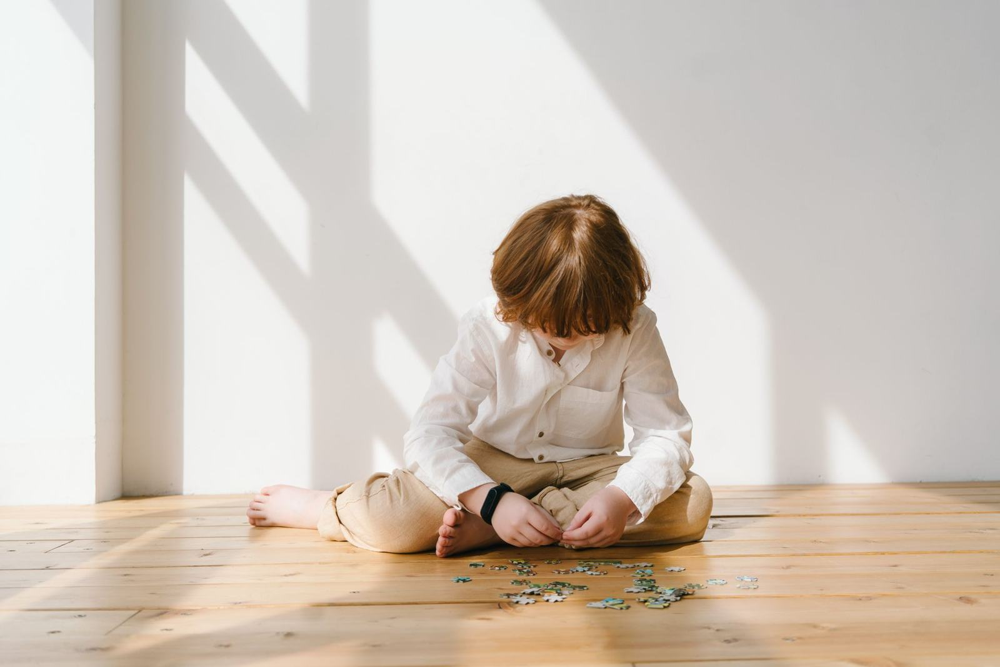

Digital · PDF
Kit terapêutico
Emoções e Regulação
Termômetro das emoções, 24 cartas de sentimentos, 18 estratégias de calma, jogos e registro de evolução.
- 4 a 11 anos
- Emoções e regulação
- 31 páginas
R$ 19,90Pagamento único
Conhecer
Compre por perfil
Recursos visuais para emoções, rotina e comunicação, e cadernos em sequência para leitura e atenção. Material de sessão e para a família continuar em casa.
7 materiais escolhidos para este perfil, na ordem em que sugerimos conhecer.
Termômetro das emoções, 24 cartas de sentimentos, 18 estratégias de calma, jogos e registro de evolução.
Comunicação alternativa pronta para usar: 8 pranchas com 160 símbolos, cartões de troca, rotina visual e histórias sociais.
Quadros, 80 cartões, 12 rotinas passo a passo e 8 histórias sociais para a criança saber o que vem agora e depois.
Olhar, procurar, lembrar e copiar, com labirintos, caça-figuras, jogo do lince e jogo das diferenças.
Das vogais às famílias de sílabas, das palavras aos primeiros textos, um degrau de cada vez.
Rimas, palmas nas sílabas, primeiro som e primeiras letras: a base para aprender a ler.
Os 4 kits juntos: Fala em Foco, Motricidade Orofacial, Comunica e Emoções e Regulação. 139 páginas de material de atendimento.